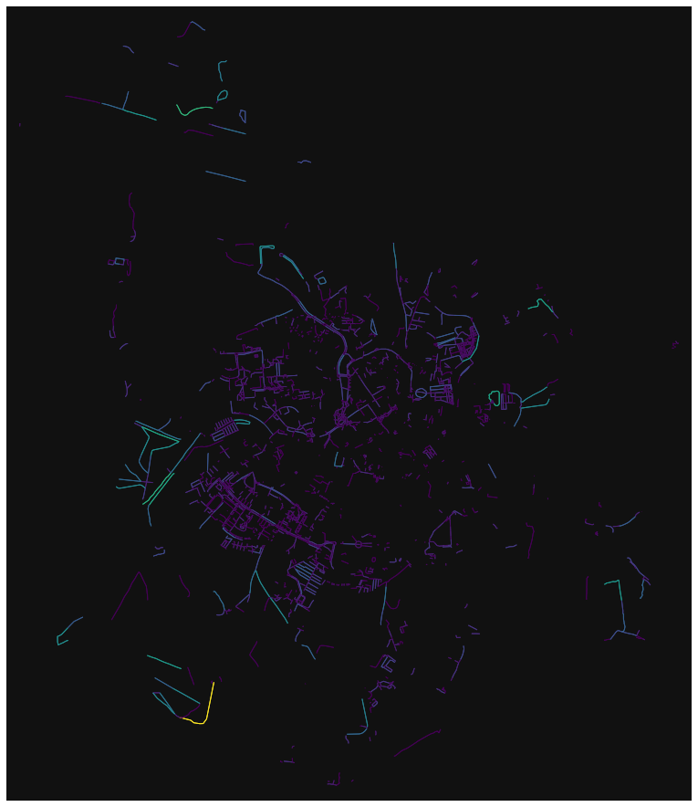
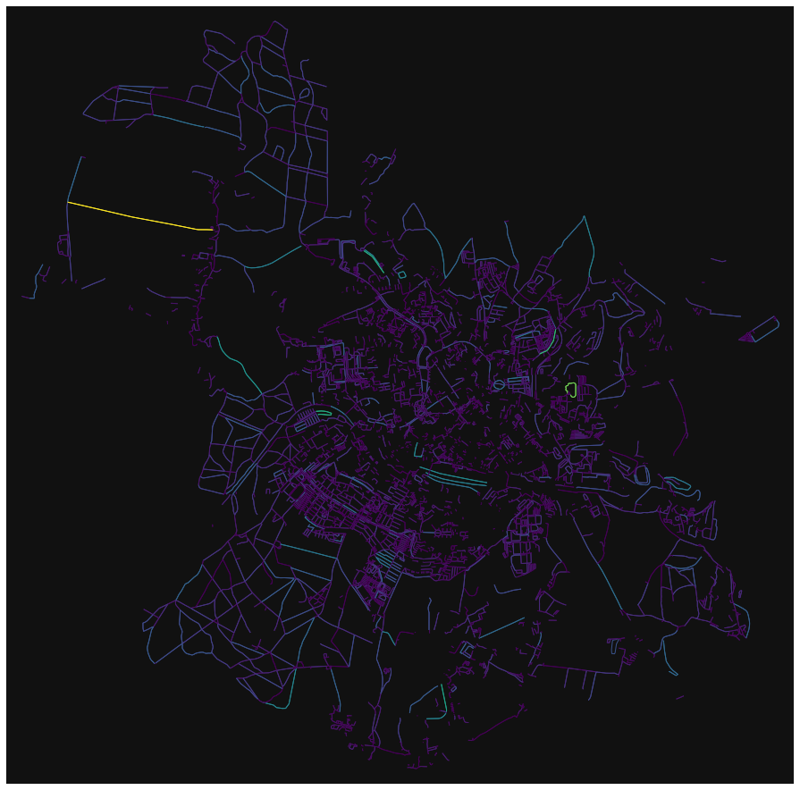
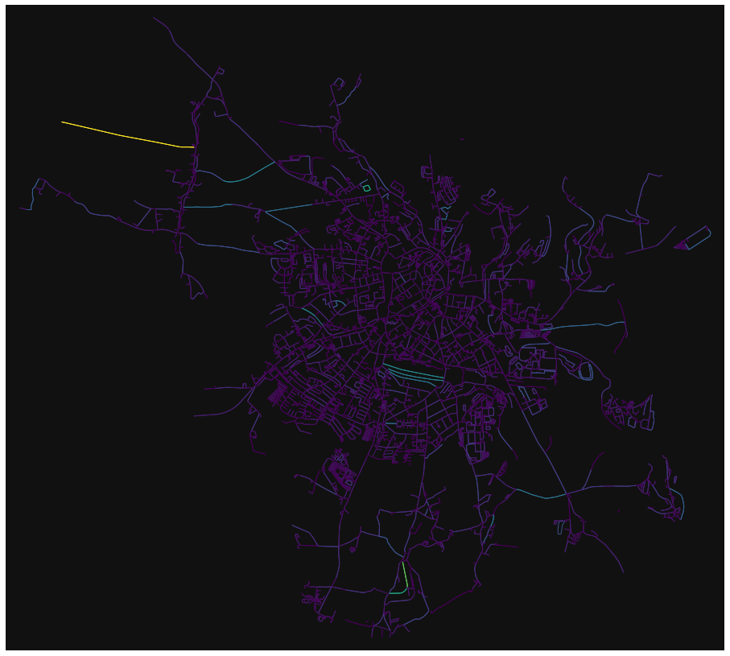
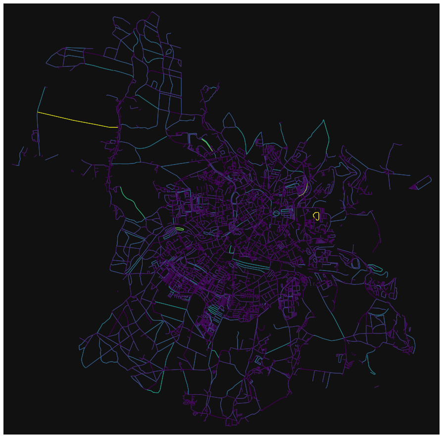
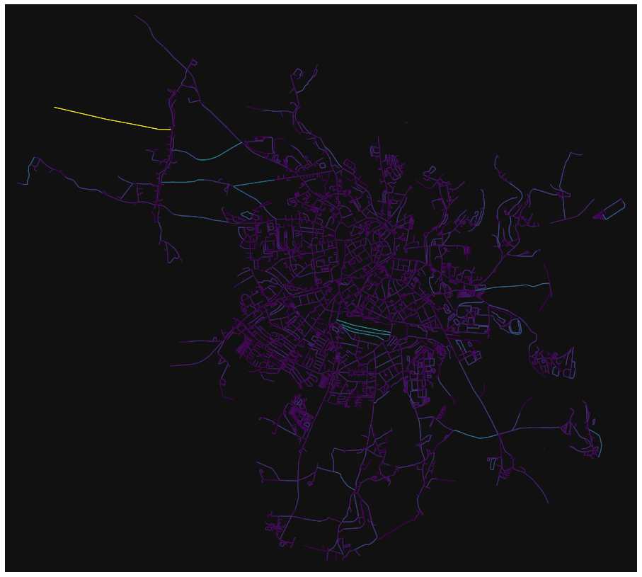
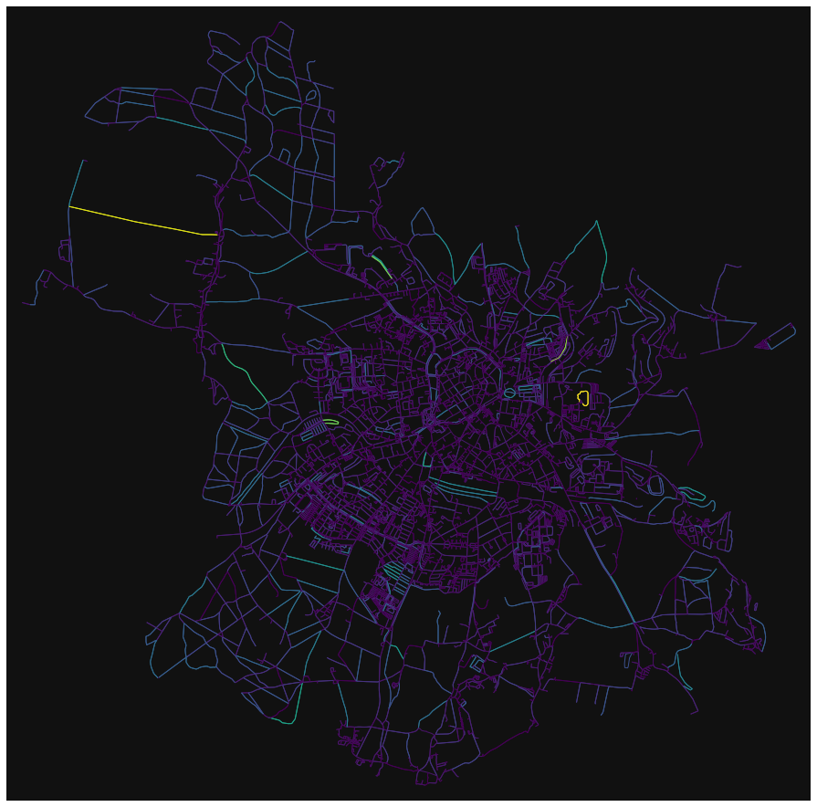

import argparse
from configobj import ConfigObj
import configreader as cfr
import osmnx as ox
import osmhelper as oh
from pathlib import Path
import json
import networkx as nx
import extract as ep
import igraph as ig
from timeit import default_timer as timer
from multiprocessing import Pool, cpu_count
import tqdm
import psutil
import pandas as pd
import sys
import gc
import osmqRuntime as osmqq
import osmquality as oq
import foliumhelper as fh
import folium
---------------------------------------------------------------------------
ModuleNotFoundError Traceback (most recent call last)
Cell In[1], line 3
1 import argparse
2 from configobj import ConfigObj
----> 3 import configreader as cfr
4 import osmnx as ox
5 import osmhelper as oh
ModuleNotFoundError: No module named 'configreader'
def get_max_speed1(cfg, edge, speeds = {}):
#example {'osmid': 26524012, 'name': 'Gailnauer Straße',
# 'highway': 'unclassified', 'oneway': False,
# 'length': 31.622999999999998,
# 'geometry': <shapely.geometry.linestring.LineString object at 0x000001E6D0DC1100>}
filters = cfr.get_filters(cfg)
speed = 0
max_speeds = []
for filter_name, filter_values in filters.items():
allowed_speed = speeds.get(filter_name.lower(), 0)
if allowed_speed <= 0:
continue
for tag, allowed_values in filter_values.items():
if tag in edge:
if edge[tag] in allowed_values:
max_speeds.append(allowed_speed)
if speeds["overrides"]:
for override_name, allowed_speed in speeds["overrides"].items():
filter = cfr.get_override_filter(cfg, override_name.capitalize())
for key, value in filter.items():
# print(key, value)
if key in edge:
if edge[key] in value:
speed = allowed_speed
if speed == 0 and max_speeds:
speed = max(max_speeds)
# print(max_speeds)
return speed
def get_max_speed2(g, tags_intercity, tags_local, tags_bicycle, tags_sidewalk, speeds={}):
#example {'osmid': 26524012, 'name': 'Gailnauer Straße',
# 'highway': 'unclassified', 'oneway': False,
# 'length': 31.622999999999998,
# 'geometry': <shapely.geometry.linestring.LineString object at 0x000001E6D0DC1100>}
# TODO Overrides
# print(speeds)
# input()
# filters = cfr.get_filters(cfg)
speed = 0
bicycle_speed = speeds.get("bicycle", 0)
sidewalk_speed = speeds.get("sidewalk", 0)
primary_speed = speeds.get("intercity", 0)
secondary_speed = speeds.get("local", 0)
if sidewalk_speed > 0:
for key, value in tags_sidewalk.items():
if key in g:
if g[key] in value:
speed = sidewalk_speed
if bicycle_speed > 0:
for key, value in tags_bicycle.items():
if key in g:
if g[key] in value:
speed = bicycle_speed
if secondary_speed > 0:
for key, value in tags_local.items():
if key in g:
if g[key] in value:
speed = secondary_speed
if primary_speed > 0:
for key, value in tags_intercity.items():
if key in g:
if g[key] in value:
speed = primary_speed
return speed
def set_speeds(G_nx, cfg = None, scenario_name = None, speed_pick = 1):
filters = cfr.get_filters(cfg)
tags_intercity = filters["Intercity"]
tags_local = filters["Local"]
tags_bicycle = filters["Bicycle"]
tags_sidewalk = filters["Sidewalk"]
speeds = cfr.get_speeds(cfg, scenario_name)
# l1 =list(nx.get_edge_attributes(G_nx, "length").values())
for u, v, k, edge in G_nx.edges(keys=True, data=True):
# print(u,v,k,edge)
# max_speed = get_max_speed(cfg, edge, speeds)
max_speed1 = get_max_speed2(
edge, tags_intercity, tags_local,
tags_bicycle, tags_sidewalk, speeds=speeds)
max_speed2 = get_max_speed1(cfg, edge, speeds)
if speed_pick == 1:
max_speed = max_speed2
elif speed_pick == 2:
max_speed = max_speed1
# if not max_speed1 == max_speed2:
# # raise Exception("Speed did not match")
# print(max_speed1, max_speed2, edge)
if max_speed == 0:
edge['length'] = -1
else:
edge['length'] = edge['length'] / (max_speed / 3.6)
# l2 = list(nx.get_edge_attributes(G_nx, "length").values())
# if l1 == l2:
# raise Exception("Same Length with different speeds")
# print(l1[1:10])
# print(l2[1:10])
return G_nx
def analyse_scenario(city, cfg, scenario, override=False, with_speed=True, folder = None, speed_pick = 1):
simplify = cfr.get_simplify(cfg)
# load city
G_nx = oh.get_place(placename=city, simplify=simplify,
clean_periphery=True,
file_identifier="", retain_all=True)
# filter_graph by scenario
filter_scenario = oq.get_scenario_filter(cfg, scenario["name"])
H_nx = G_nx.copy()
H_nx = oh.filter_graph_by_dict(H_nx, filter_scenario, drop_nodes=False)
H_nx = oq.load_pop_scenario(
H_nx, city, scenario["name"], simplify, override)
H_nx = set_speeds(H_nx, cfg=cfg, scenario_name = scenario["name"], speed_pick=speed_pick)
return H_nx
cfg = ConfigObj("osmquality.ini")
scenarios = cfr.get_scenarios(cfg)
graphs1 = []
graphs2 = []
city = "Freiberg, Sachsen"
for scenario in scenarios:
print(scenario.name)
graph = analyse_scenario(city, cfg, scenario , override = True, speed_pick = 1)
graph2 = analyse_scenario(city, cfg, scenario , override = True, speed_pick = 2)
graphs1.append(graph)
graphs2.append(graph2)
print(len(list(nx.get_edge_attributes(graph, "length").values())))
Small
Max pop: 40708.0
c:\Users\plank\Documents\git\osmquality\Extract.py:252: FutureWarning: Dropping of nuisance columns in DataFrame reductions (with 'numeric_only=None') is deprecated; in a future version this will raise TypeError. Select only valid columns before calling the reduction.
sums = nodes.sum()
34613.38999999999
filtered: 85
Max pop: 40708.0
c:\Users\plank\Documents\git\osmquality\Extract.py:252: FutureWarning: Dropping of nuisance columns in DataFrame reductions (with 'numeric_only=None') is deprecated; in a future version this will raise TypeError. Select only valid columns before calling the reduction.
sums = nodes.sum()
34613.38999999999
filtered: 85
7250
7250
Medium
Max pop: 40708.0
c:\Users\plank\Documents\git\osmquality\Extract.py:252: FutureWarning: Dropping of nuisance columns in DataFrame reductions (with 'numeric_only=None') is deprecated; in a future version this will raise TypeError. Select only valid columns before calling the reduction.
sums = nodes.sum()
34613.38999999999
filtered: 85
Max pop: 40708.0
c:\Users\plank\Documents\git\osmquality\Extract.py:252: FutureWarning: Dropping of nuisance columns in DataFrame reductions (with 'numeric_only=None') is deprecated; in a future version this will raise TypeError. Select only valid columns before calling the reduction.
sums = nodes.sum()
34613.38999999999
filtered: 85
20983
20983
Medium-restricted
Max pop: 40708.0
c:\Users\plank\Documents\git\osmquality\Extract.py:252: FutureWarning: Dropping of nuisance columns in DataFrame reductions (with 'numeric_only=None') is deprecated; in a future version this will raise TypeError. Select only valid columns before calling the reduction.
sums = nodes.sum()
34613.38999999999
filtered: 85
Max pop: 40708.0
c:\Users\plank\Documents\git\osmquality\Extract.py:252: FutureWarning: Dropping of nuisance columns in DataFrame reductions (with 'numeric_only=None') is deprecated; in a future version this will raise TypeError. Select only valid columns before calling the reduction.
sums = nodes.sum()
34613.38999999999
filtered: 85
16367
16367
Large
Max pop: 40708.0
c:\Users\plank\Documents\git\osmquality\Extract.py:252: FutureWarning: Dropping of nuisance columns in DataFrame reductions (with 'numeric_only=None') is deprecated; in a future version this will raise TypeError. Select only valid columns before calling the reduction.
sums = nodes.sum()
34613.38999999999
filtered: 85
Max pop: 40708.0
c:\Users\plank\Documents\git\osmquality\Extract.py:252: FutureWarning: Dropping of nuisance columns in DataFrame reductions (with 'numeric_only=None') is deprecated; in a future version this will raise TypeError. Select only valid columns before calling the reduction.
sums = nodes.sum()
34613.38999999999
filtered: 85
13799
13799
Optimal
Max pop: 40708.0
c:\Users\plank\Documents\git\osmquality\Extract.py:252: FutureWarning: Dropping of nuisance columns in DataFrame reductions (with 'numeric_only=None') is deprecated; in a future version this will raise TypeError. Select only valid columns before calling the reduction.
sums = nodes.sum()
34613.38999999999
filtered: 85
Max pop: 40708.0
c:\Users\plank\Documents\git\osmquality\Extract.py:252: FutureWarning: Dropping of nuisance columns in DataFrame reductions (with 'numeric_only=None') is deprecated; in a future version this will raise TypeError. Select only valid columns before calling the reduction.
sums = nodes.sum()
34613.38999999999
filtered: 85
21836
21836
for graph, scneario in zip(graphs1, scenarios):
print(scenario["name"])
x = ox.plot_graph(graph, figsize=(16,16), edge_color=ox.plot.get_edge_colors_by_attr(graph, "length"), node_size = 0)
Optimal

Optimal
Optimal

Optimal

Optimal
for graph, scneario in zip(graphs2, scenarios):
print(scenario["name"])
x = ox.plot_graph(graph, figsize=(16,16), edge_color=ox.plot.get_edge_colors_by_attr(graph, "length"), node_size = 0)
Optimal
Optimal

Optimal
Optimal

Optimal

# x = ox.plot_graph(b, figsize=(16,16), edge_color=ox.plot.get_edge_colors_by_attr(b, "length"), node_size = 0)
# l1 = list(nx.get_edge_attributes(a, "length").values())
# l2 = list(nx.get_edge_attributes(b, "length").values())
# for x, y in zip(l1,l2):
# if x == y:
# continue
# print(x, y)
oq.get_scenario_filter(cfg, "Small")
{'sidewalk:left': ['lane',
'both',
'left',
'share_busway',
'yes',
'right',
'sidepath',
'footway',
'shared',
'sperate'],
'path': ['sidepath', 'sidewalk'],
'highway': ['pedestrian', 'living_street', 'footway', 'path'],
'foot': ['designated', 'permissive', 'yes'],
'sidewalk:right': ['lane',
'both',
'left',
'share_busway',
'yes',
'right',
'sidepath',
'footway',
'shared',
'sperate'],
'sidewalk': ['right', 'seperate', 'shared', 'both', 'left', 'yes'],
'footway': ['crossing', 'sidewalk'],
'living_street': ['yes'],
'sidewalk:both': ['lane',
'both',
'left',
'share_busway',
'yes',
'right',
'sidepath',
'footway',
'shared',
'sperate']}
oq.get_scenario_filter(cfg, "Medium")
{'sidewalk:left': ['lane',
'both',
'left',
'share_busway',
'yes',
'right',
'sidepath',
'footway',
'shared',
'sperate'],
'path': ['sidepath', 'sidewalk'],
'living_street': ['yes'],
'cycleway:right': ['lane',
'both',
'left',
'share_busway',
'yes',
'right',
'sidepath',
'footway',
'shared',
'sperate'],
'cycleway:both': ['lane',
'both',
'left',
'share_busway',
'yes',
'right',
'sidepath',
'footway',
'shared',
'sperate'],
'highway': ['residential',
'pedestrian',
'path',
'tertiary',
'unclassified',
'track',
'cycleway',
'service',
'footway',
'living_street'],
'cycleway:left': ['lane',
'both',
'left',
'share_busway',
'yes',
'right',
'sidepath',
'footway',
'shared',
'sperate'],
'foot': ['designated', 'permissive', 'yes'],
'sidewalk:right': ['lane',
'both',
'left',
'share_busway',
'yes',
'right',
'sidepath',
'footway',
'shared',
'sperate'],
'sidewalk': ['right', 'seperate', 'shared', 'both', 'left', 'yes'],
'footway': ['crossing', 'sidewalk'],
'cycleway': ['lane',
'opposite_track',
'segregated',
'sidewalk',
'cyclestreet',
'seperate',
'opposite_lane',
'opposite',
'track',
'left',
'share_busway',
'shared_lane',
'both',
'right',
'sidepath',
'asl'],
'bicycle': ['official', 'designated', 'permissive', 'use_sidepath', 'yes'],
'sidewalk:both': ['lane',
'both',
'left',
'share_busway',
'yes',
'right',
'sidepath',
'footway',
'shared',
'sperate'],
'cyclestreet': ['yes']}